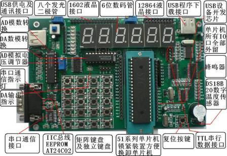

|
TX-1C单片机学习板 直接USB口烧写程序

二．TX-1C实验板基本配置
1、89C52单片机，支持USB口或者是串口两种下载程序方式，也就是你不用买单片机烧写器也能够随时烧写程序到你的片子里查看您编写的程序状况。
2、6位数码管（做动态扫描及静态显示实验）。
3、8位LED发光二极管（做流水灯实验）。
4、MAX232芯片RS232通讯接口（可以做为与计算机通迅的接口同时也可做为STC单片机下载程序的接口）
5、USB供电系统，直接插接到电脑USB口即可提供电源，不需另接直流电源。
6、蜂鸣器（做单片机发声实验）
7、ADC0804芯片（做模数转换实验）。
8、DAC0832芯片(做数模转换实验)
9、PDIUSBD12芯片(USB设备开发,如单片机读写U盘,自制U盘,自制MP3等,还可通过此芯片让计算机与单片机传输数据）。
10、USB转串口芯片，直接由计算机USB口下载程序至单片机，
11、DS18B20温度传感器，（初步掌握单片机操作后即可亲自编写程序获知当时的温度）
12、AT24C02外部EEPROM芯片(IIC总线元件实验)
13、字符液晶1602接口。（可显示两行字符）
14、图形液晶12864接口（可显示任意汉字及图形）
14、4*4矩阵键盘另加四个独立键盘（键盘检测试验）。
15、单片机32个IO口全部引出，方便自己进行自由扩展。
16、锁紧装置,非常方便主芯片的安装及卸取
16、大部分元件采用贴片封装，有效的节省了系统空间。元器件的选择采用软件选通，无跳线跳接，具有极强的系统综合性。
17、光盘中含本实验板所有例程。赠送伟��仿真软件，easy 51pro下载软件，STC单片机程序下载软件，KEIL51等及所有电路图、实验板详细使用教程，下载教程等。
三.自带在线仿真功能
TX系列学习板可直接安装在线仿真芯片SST89E564RD,用户可不必再花钱买价格昂贵的仿真器,将仿真芯片安在实验板上后便可直接进行在线单步,全速调试等.
仿真芯片的作用：仿真芯片可以实现计算机与实验板之间的真正在线调试，用KEIL软件连接好仿真器后可以在软件调试模式下进行单步的执行指令、可设置断点等。每执行一条指令都可看见实验板的运行状态，并且可随时查看各个变量的值，对初学者非常有帮助。如果不使用仿真芯片而直接使用板上单片机调试程序只能全速执行指令，通过实验板现象来重新修改程序，再次下载。TX系列学习板使用仿真功能时只需要把原来板上的单片机拔下，
安上仿真芯片按照光盘里的仿真说明教程即可实现仿真调试。（标配组件包括仿真芯片,用户不需要另加钱）
四．性能特点
・ 编程器、实验板、烧写器、仿真器四合一
・ 质量保证，性能稳定
・ 为主板配有底座，使用安全放心
・ 板上资源丰富，跳线简单明了，便于学习
・ 提供丰富的实验例程，包括汇编和C代码
・ 采用源码公开的编程软件，性能保证
・ 配有40Pin外扩接口
・ 配有6PIN ISP下载连接头，单独做ISP下载线使用
笔记本使用TX-1B方案：很多用户想用笔记本来连接实验板，而目前很多笔记本都没有串口，TX-1C单片机学习板可直接使用USB口下载程序,用户通过USB下载接口连接电脑后，电脑提示发现新硬件，安装光盘里的USB转串口驱动程序后便可直接使用.
|